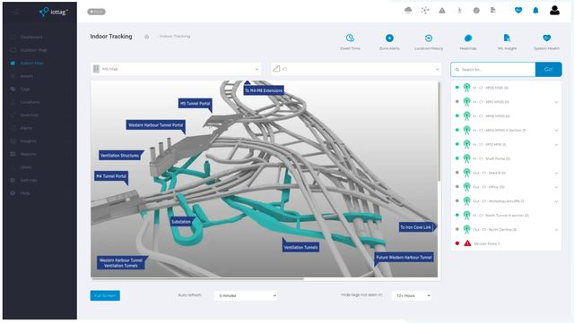
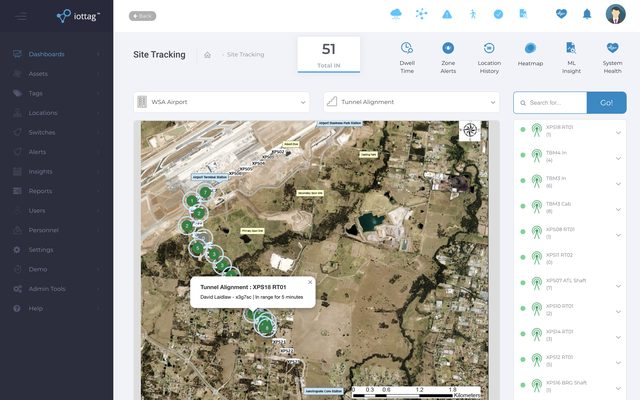
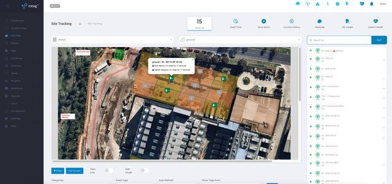
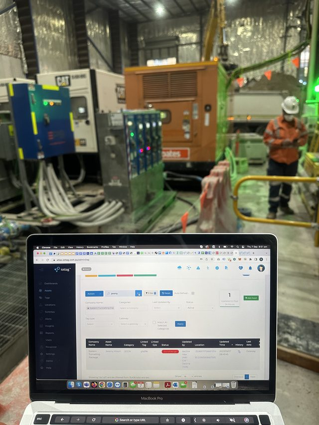
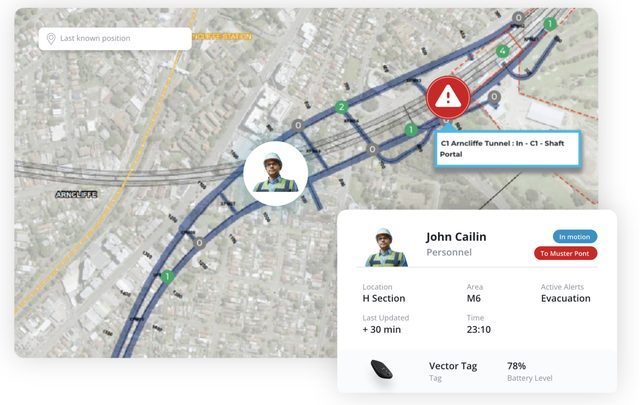
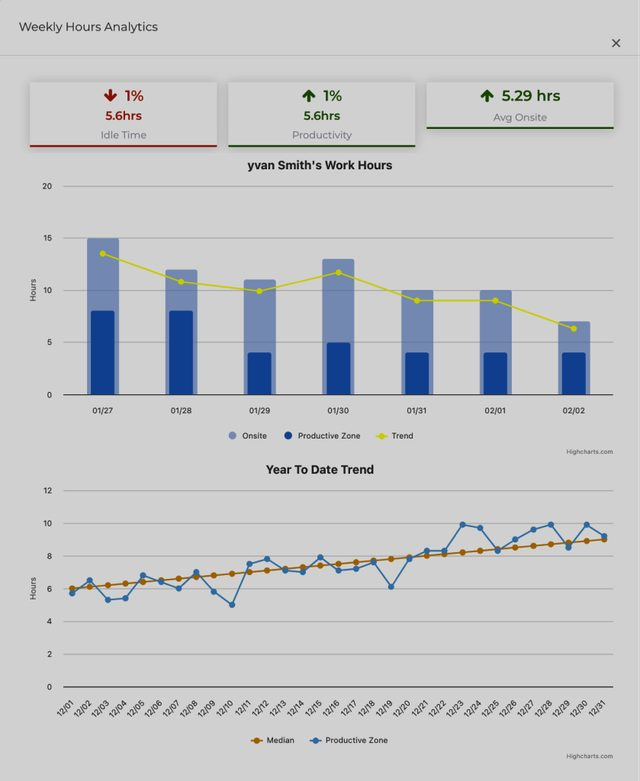
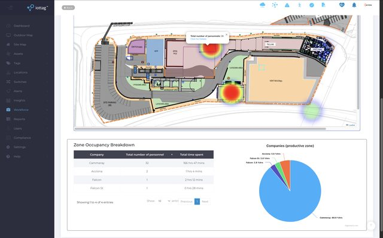
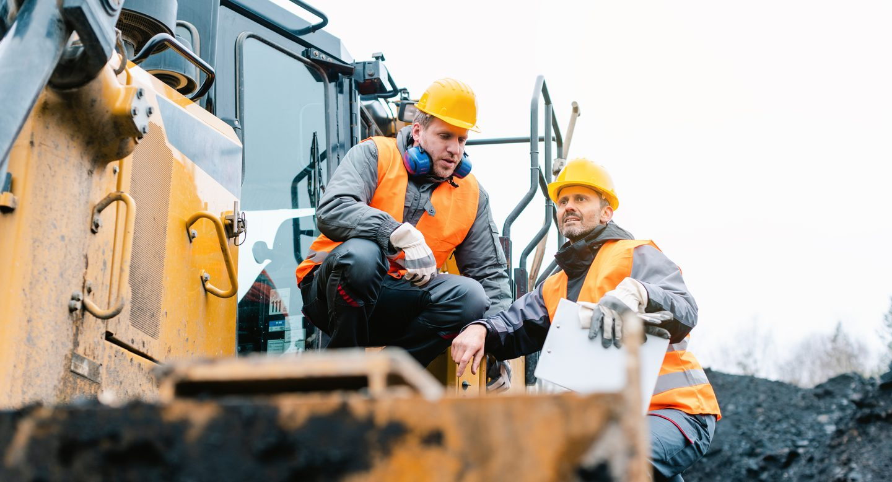

Connected By Design
Operational Intelligence becomes more powerful when information works together.
Most organisations already have technology investments
The iottag platform helps organisations connect and gain more value from the systems they already use.
Connecting The Operational Environment
Examples:

Fleet systems

Environmental systems
Communications platforms

Access control

Cameras

Radios

Production systems

Safety technologies
Production Intelligence helps organisations understand these relationships and identify opportunities for improvement.
Creating A Shared
Operational Understanding
The objective is not integration for integration’s sake.
The objective is helping teams understand what is happening across the operation.

Open Architecture
The platform has been designed to integrate with existing operational technologies,
helping organisations create a connected operational environment.